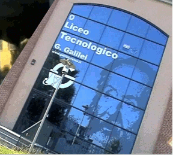
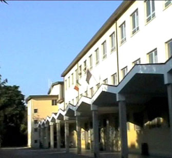
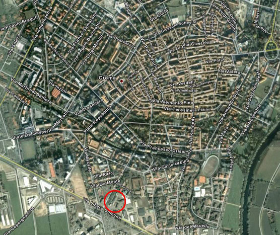

Questo indirizzo di studio caratterizzato in modo specifico dall'integrazione tra scienza e tecnologia.
Sul versante scientifico viene evidenziato l'apporto delle tecnologie nel passaggio dal progetto ideativo al sistema operativo e produttivo, il ruolo della tecnologia come mediazione concreta tra scienza e vita quotidiana, la funzione delle tecnologie informatiche.
Sul versante tecnologico viene costantemente richiamata la necessità di una conoscenza consapevole del perchè, il senso della progettualità fondata sulle conoscenze teoriche, la consapevolezza dei fini del fare e del costruire.
Pure l'area delle discipline umanistiche adeguatamente ampia e articolata allo scopo di assicurare l'acquisizione di strumenti essenziali per raggiungere una visione complessiva delle realtà storiche e delle espressioni culturali delle società umane.

L'Istituto Tecnologico si articola in 3 indirizzi:
La specializzazione Meccanica presenta le due articolazioni Meccatronica ed Energia. Le competenze che gli studenti del corso apprendono spaziano dalla progettazione meccanica, alla tecnologia dei materiali, all'elettrotecnica, all'elettronica, al disegno, all'organizzazione e all'automazione industriale.
Chimica e Materiali crea una figura professionale capace di inserirsi nelle diverse realtà chimiche, utilizzando conoscenze di metodi, di tecniche di campionamento, di analisi, e di progettazione e controllo di prodotti e di processi.
Nel nuovo indirizzo di Informatica e Telecomunicazioni l'obiettivo quello di formare un tecnico che abbia sviluppato e consolidato competenze nel campo dei sistemi informatici, dell'elaborazione dell'informazione, delle applicazioni e tecnologie Web, delle reti wired e wireless, degli apparati di comunicazione.
Visita il nostro sito web o vieni a visitare la nostra scuola di persona!
